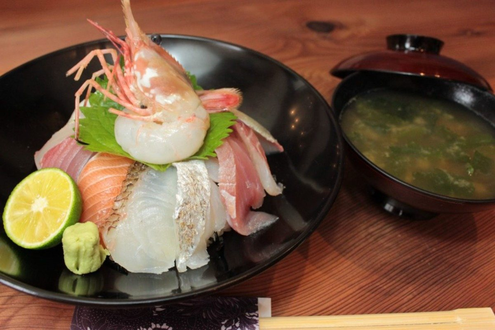
| 営業時間 | 11:00〜13:30／17:00〜20:00（鮮魚・惣菜の販売は10:00〜。17:00以降は予約可） |
|---|---|
| 定休日 | 水曜・日曜 |
| 住所 | 徳島県阿南市羽ノ浦町宮倉芝生79-1 パル羽ノ浦イートモール |
| 予約 | 可（夜のみ。電話またはInstagramのDM） — ☎ 080-3923-6787 |
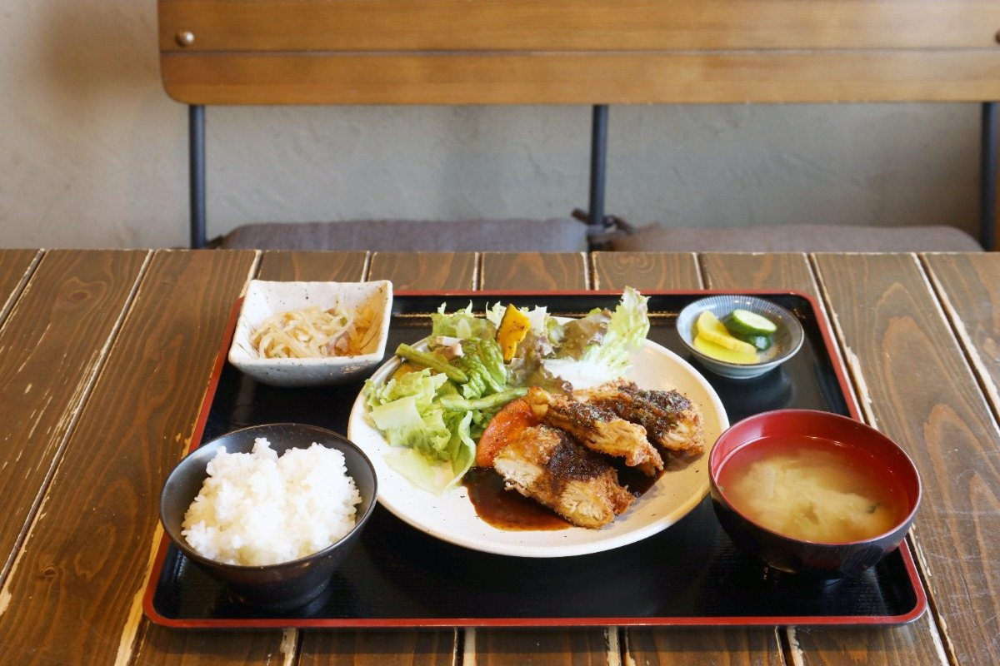
| 営業時間 | 昼 月・火・水・金 11:00〜14:00（L.O.13:30／なくなり次第終了）／夜 月〜土 17:00〜23:00（L.O.22:30） |
|---|---|
| 定休日 | 日曜（昼の営業は木・土・日・祝も休み） |
| 住所 | 徳島県阿南市見能林町西石仏7 |
| 予約 | 可（電話） — ☎ 0884-22-0593 |
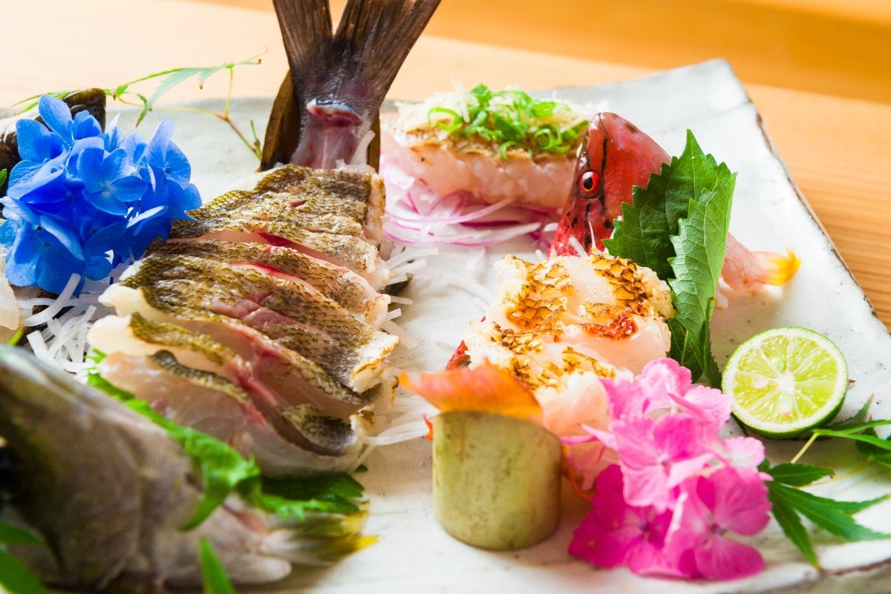
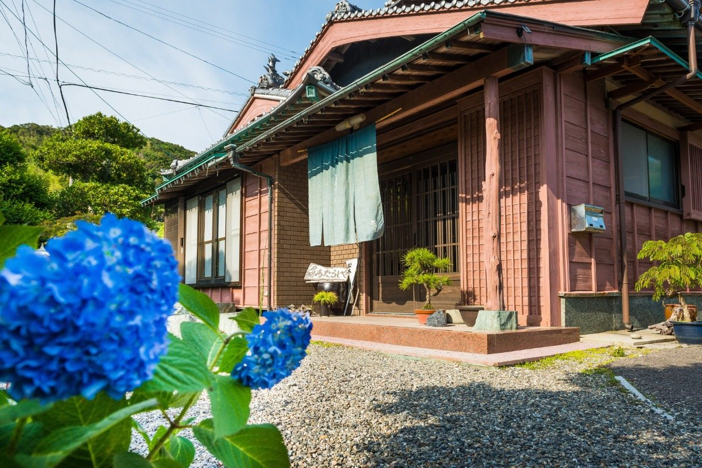
| 営業時間 | 11:00〜15:00／17:30〜20:00（完全予約制。昼の食事は2名以上・5日前までの予約） |
|---|---|
| 定休日 | 不定休 |
| 住所 | 徳島県阿南市椿町蒲生田154 |
| 予約 | 必須（電話。ホットペッパーグルメのネット予約も可・来店3日前まで） — ☎ 090-6880-7643 ／ 公式サイト |
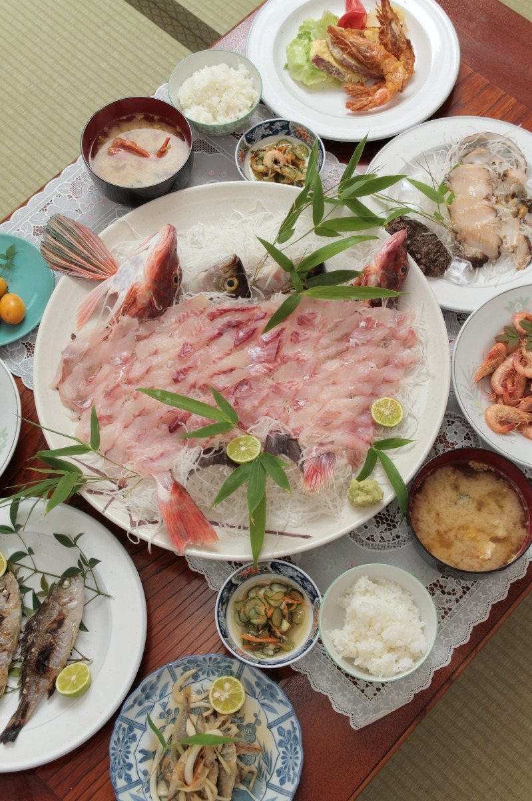
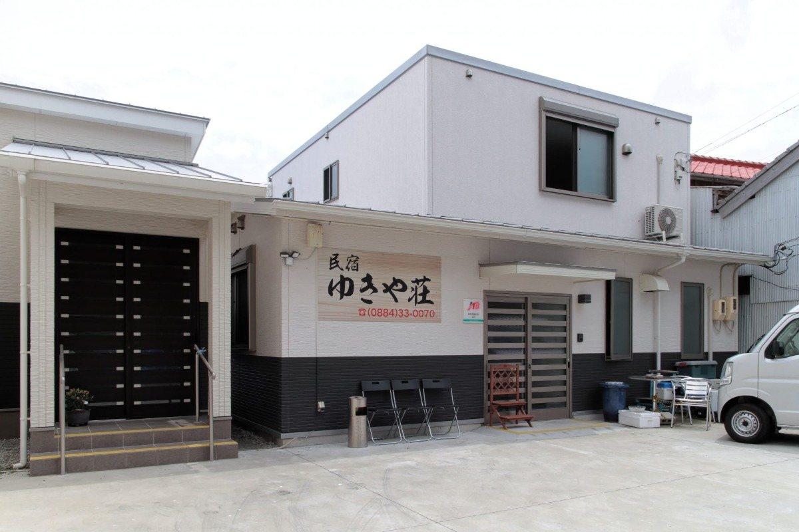
| 営業時間 | 昼の食事 12:00〜20:00（要予約。7日前まで・2名以上） |
|---|---|
| 定休日 | 無休 |
| 住所 | 徳島県阿南市椿泊町東55 |
| 予約 | 必須（電話。7日前まで・2名以上） — ☎ 0884-33-0070 |
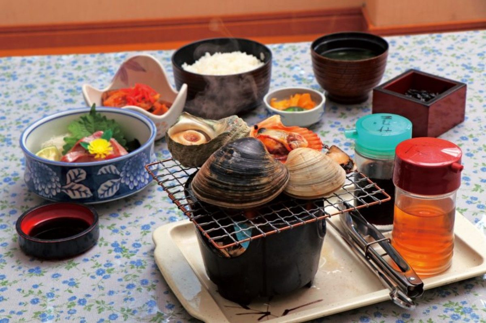
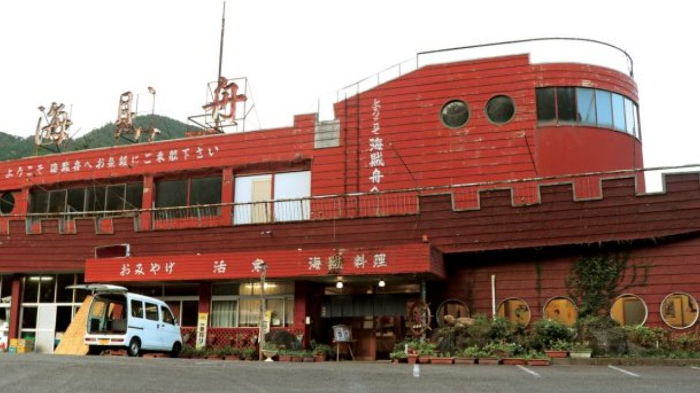
| 営業時間 | 11:00〜19:00（17:00以降は要予約） |
|---|---|
| 定休日 | 水曜（臨時休業あり） |
| 住所 | 徳島県海部郡美波町北河内字本村484-16 |
| 予約 | 可（電話。17:00以降は必須） — ☎ 0884-77-0013 ／ 公式サイト |
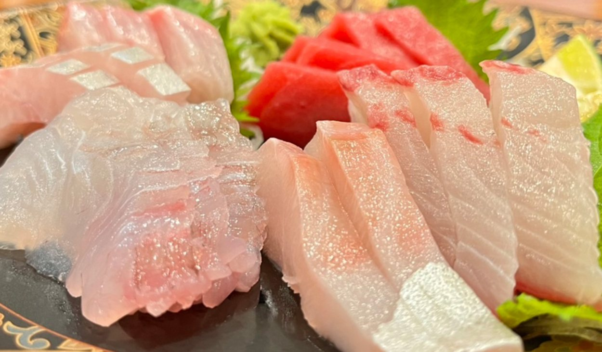
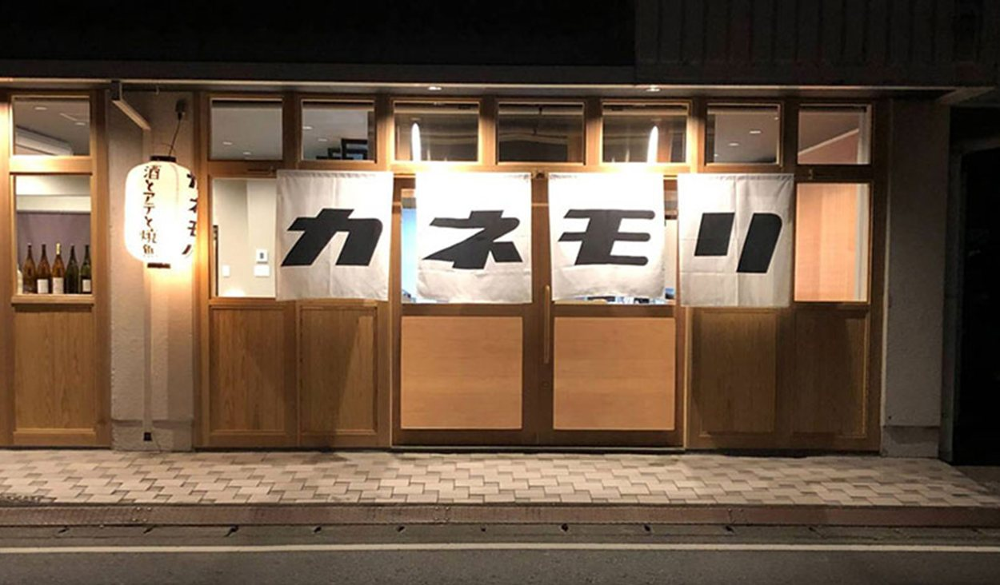
| 営業時間 | 17:30〜22:30（料理L.O. 22:00／ドリンクL.O. 22:00）※ホットペッパーの記載。公式サイトは17:30〜22:00としており30分食い違う。昼の営業はなし |
|---|---|
| 定休日 | 火曜 |
| 住所 | 徳島県阿南市羽ノ浦町古庄大坪原61-4 |
| 予約 | 可（電話 0884-44-2610、またはホットペッパーグルメのネット予約。即予約は来店当日20時まで、リクエスト予約は前日17時まで） — ☎ 0884-44-2610 ／ 公式サイト |
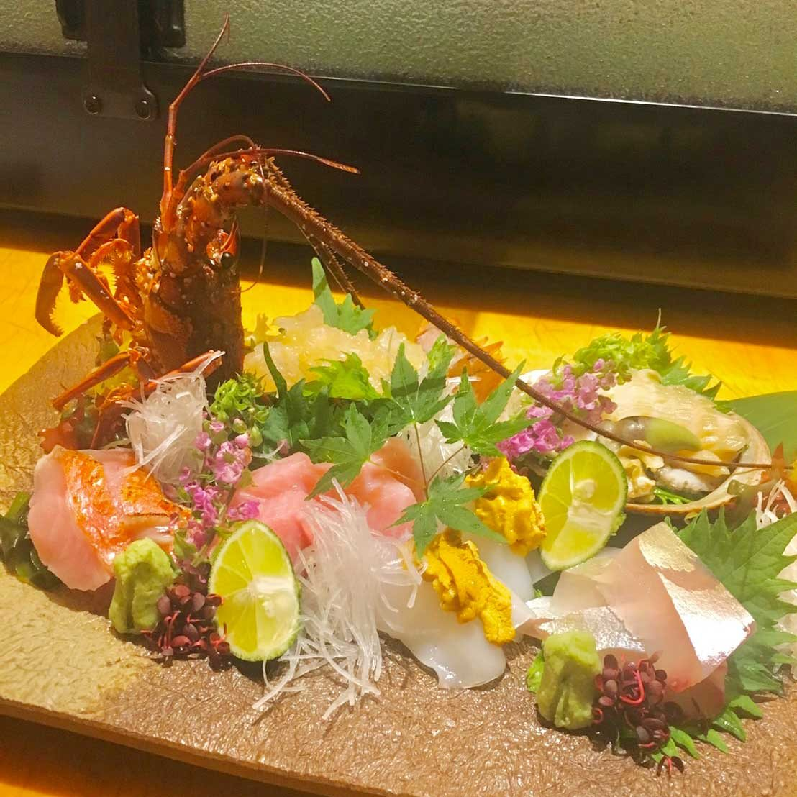
| 営業時間 | 昼 12:00〜14:00（要予約）／夜 17:30〜22:00（要予約）※公式サイトに「平日の昼営業はしばらくお休み」との但し書きがある |
|---|---|
| 定休日 | 不定休（要予約） |
| 住所 | 徳島県阿南市富岡町玉塚1-1 |
| 予約 | 要（完全予約制。電話 0884-22-8170 のみ。昼・夜とも予約が必要で、鍋料理は要問い合わせ） — ☎ 0884-22-8170 ／ 公式サイト |
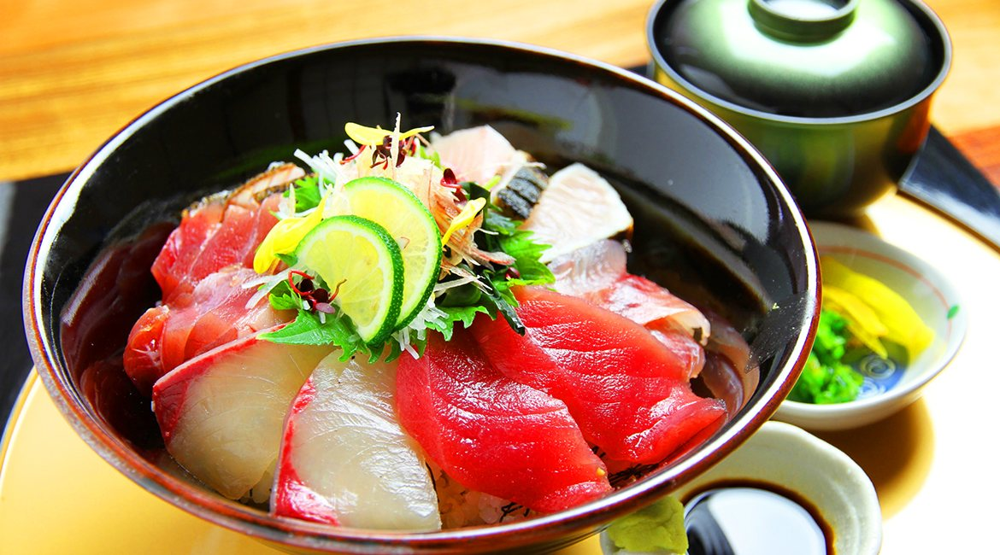
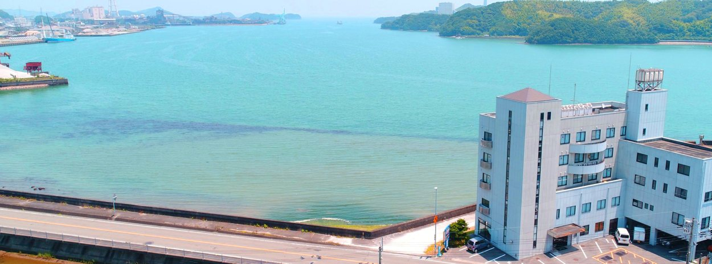
| 営業時間 | 11:00〜15:00（料理L.O. 14:30／ドリンクL.O. 14:30）／17:30〜21:00（料理L.O. 20:00／ドリンクL.O. 20:30）※ホットペッパーの記載。楽天ぐるなび・ヒトサラ・Retty は 11:00〜14:30／17:30〜20:30 としており食い違う。公式サイトは定休日しか書いていない |
|---|---|
| 定休日 | 月曜 |
| 住所 | 徳島県阿南市橘町幸田92-2 |
| 予約 | 可（電話 0884-27-2027、またはホットペッパーグルメのネット予約。即予約は来店当日12時まで。海賊料理と1日10食の玉手箱ランチは要予約） — ☎ 0884-27-2027 ／ 公式サイト |
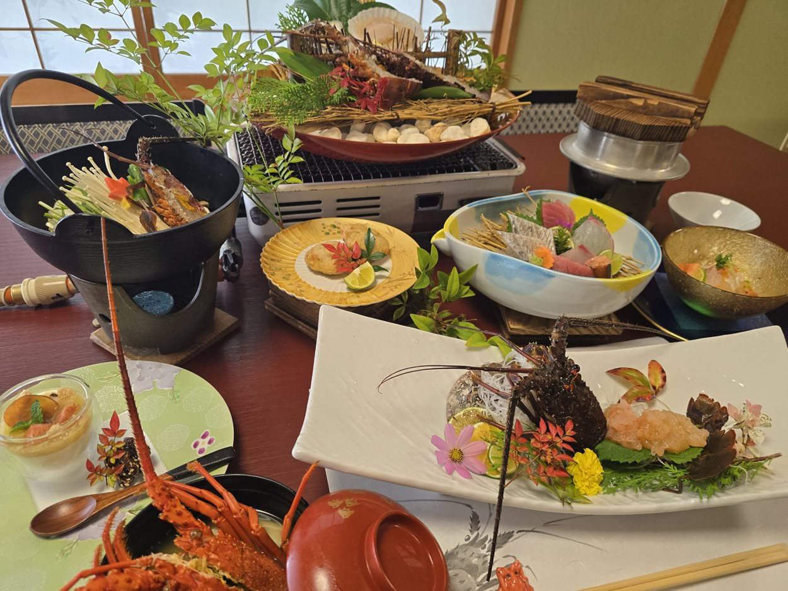
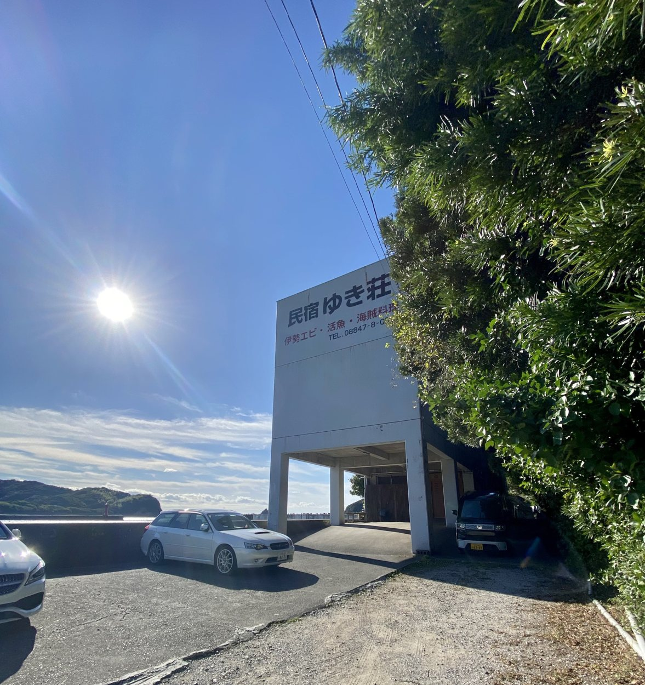
| 営業時間 | ランチ 11:30〜／ディナー 17:00〜（いずれも要予約。月曜と店休日の翌日は12:00〜）。ホットペッパーは「月 12:00〜20:00、火〜日 11:00〜20:00」と幅で記載しており、公式サイトの記載を採った |
|---|---|
| 定休日 | 不定休（12月31日〜1月6日は休み） |
| 住所 | 徳島県海部郡美波町西由岐字愛宕山13-19 |
| 予約 | 要（予約は電話 0884-78-0513 のみ。原則3日前まで。ランチは1コース2名から。20時30分以降の電話は不可。空室の問い合わせは公式サイトのフォーム） — ☎ 0884-78-0513 ／ 公式サイト |
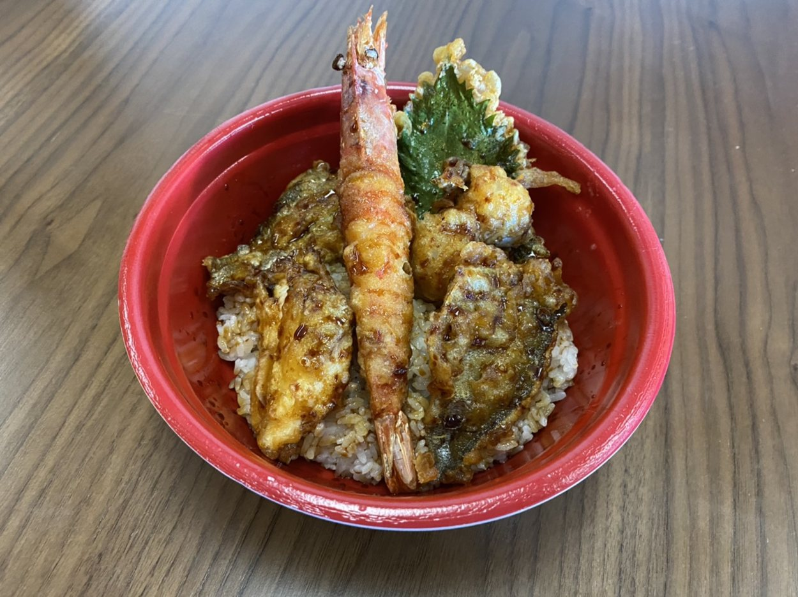
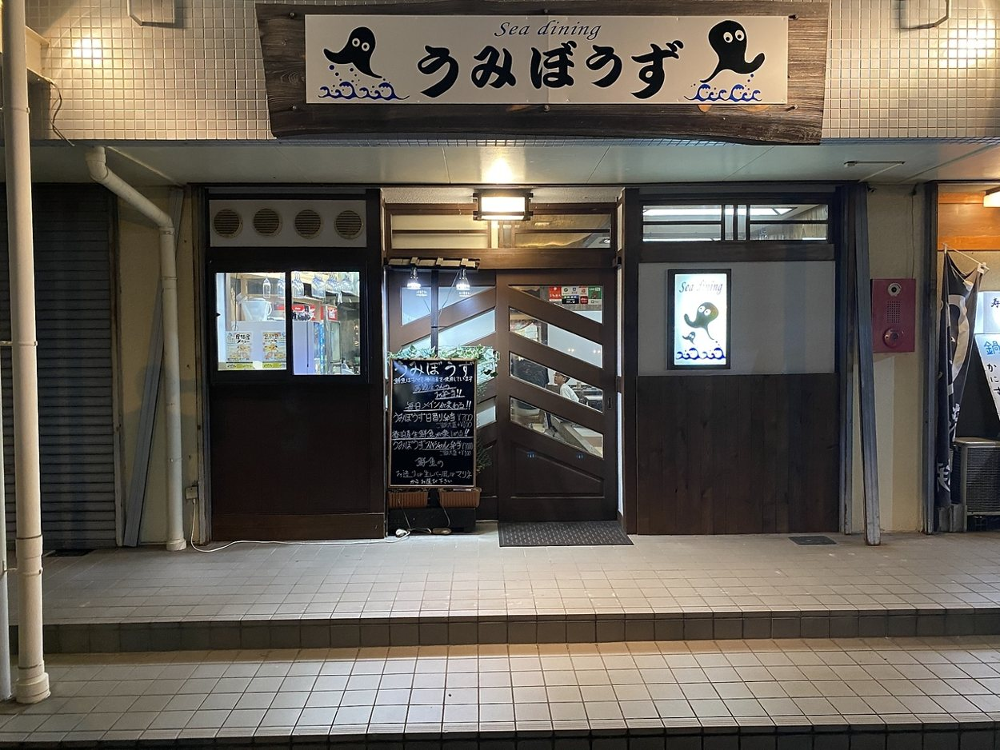
| 営業時間 | 11:00〜14:00（料理L.O. 14:00）／17:00〜23:00（料理L.O. 22:00、ドリンクL.O. 22:30）※公式インスタグラムは昼を11:30〜14:00と記載しており30分食い違う |
|---|---|
| 定休日 | 火曜（当日に水揚げされた鮮魚を使うため、不漁時は臨時休業することがある） |
| 住所 | 徳島県阿南市津乃峰町長浜110-6 広浦ビル102 |
| 予約 | 可（電話 0884-49-4654 のみ。予約の受付時間は10:00〜13:00と17:00〜22:00。ネット予約は受け付けていない） — ☎ 0884-49-4654 |
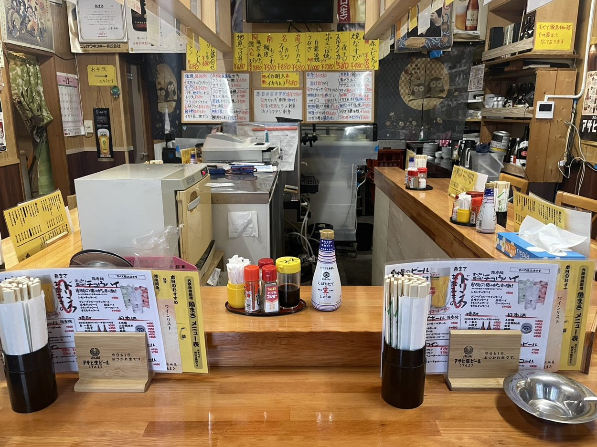
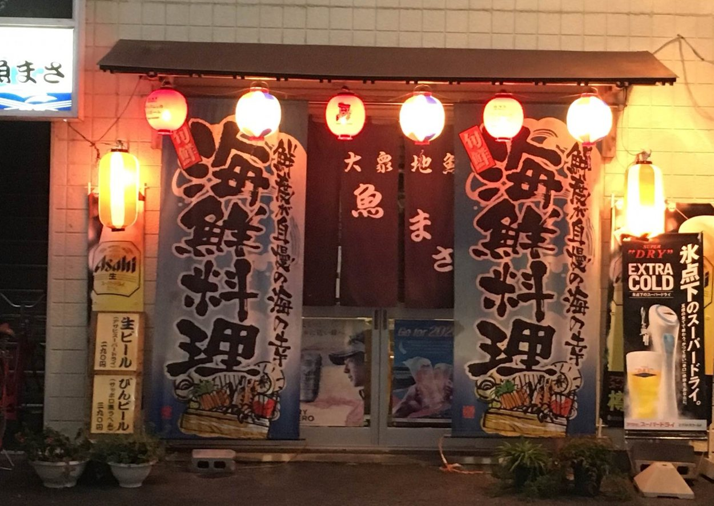
| 営業時間 | 18:00〜22:30（ラストオーダー 21:30）※楽天ぐるなびは17:30〜22:00と記載しており食い違う。公式サイトの記載を採った。ネタが無くなり次第、早く閉めることがある |
|---|---|
| 定休日 | 不定期（基本は日曜日）※楽天ぐるなびは「日曜日」と言い切っている |
| 住所 | 徳島県阿南市富岡町南向26-4 武田ビル1階 |
| 予約 | 可（電話 0884-23-0191 のみ。小部屋は6人まで） — ☎ 0884-23-0191 ／ 公式サイト |
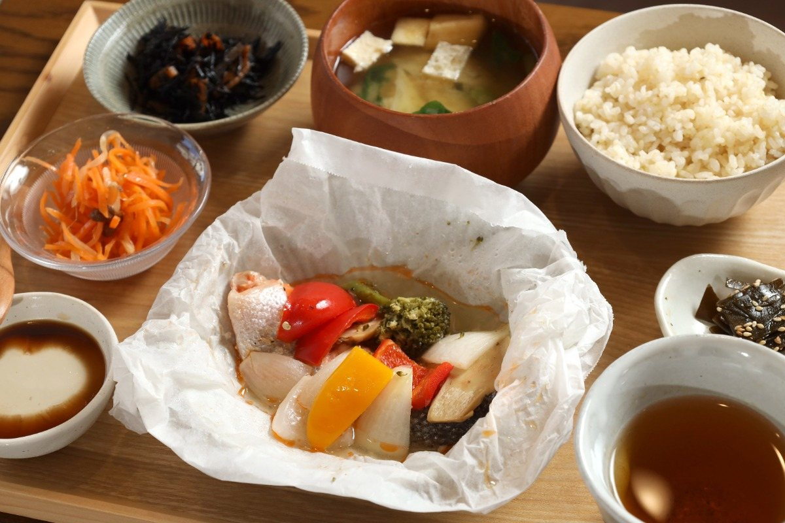
| 営業時間 | 7:00〜10:00（朝定食）／11:00〜14:00（昼定食） |
|---|---|
| 定休日 | 日曜・月曜（隔週で土曜も休み） |
| 住所 | 徳島県阿南市富岡町トノ町28-20 |
| 予約 | 可（電話は無く、InstagramのDMのみ） |
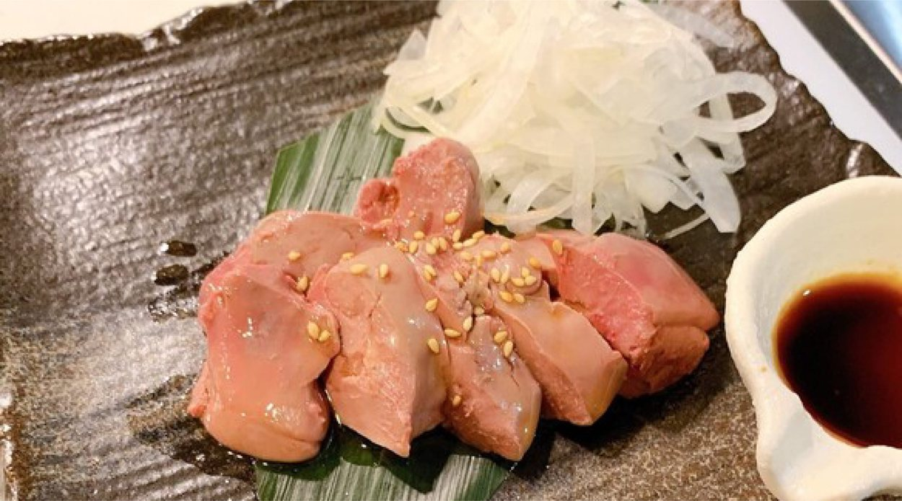
| 営業時間 | 18:00〜23:00（L.O. 料理22:00／ドリンク22:30） |
|---|---|
| 定休日 | 不定休（食べログの基本情報では火曜） |
| 住所 | 徳島県阿南市富岡町あ石10-4 |
| 予約 | 可（電話） — ☎ 090-8794-6010 ／ 公式サイト |
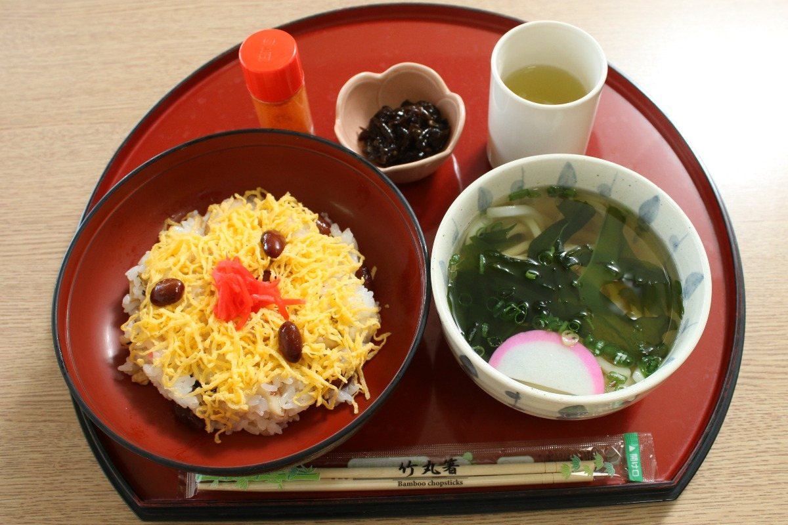
| 営業時間 | 11:30〜14:00（L.O.13:45） |
|---|---|
| 定休日 | 不定休（遠方から行くときは事前に電話で確認を） |
| 住所 | 徳島県那賀郡那賀町和食郷田野62（道の駅鷲の里） |
| 予約 | 15名以上は必須（電話） — ☎ 0884-62-3222 |
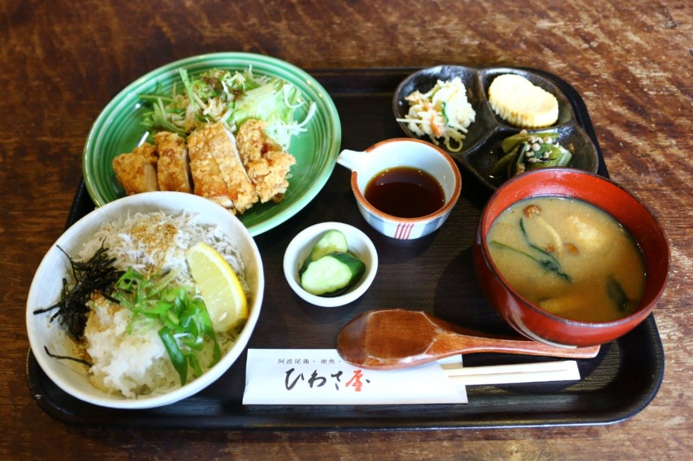
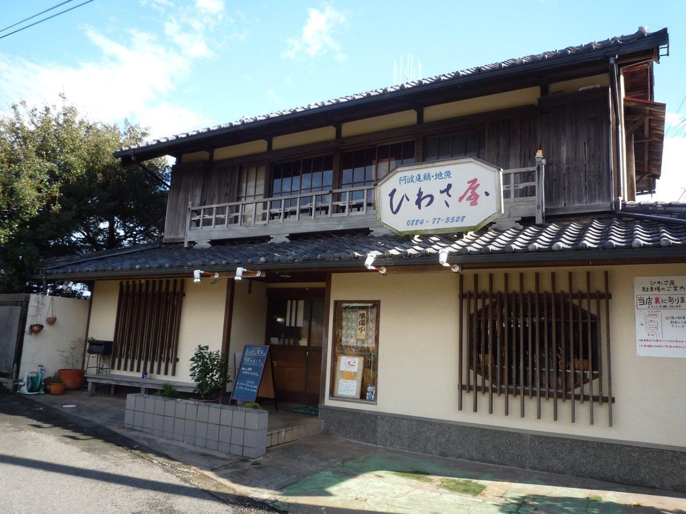
| 営業時間 | 11:30〜14:00／17:30〜21:00 |
|---|---|
| 定休日 | 水曜・第2土曜（公式サイト。あわわは第2・第4火曜も休みと記載しており、訪問前に電話で確認を） |
| 住所 | 徳島県海部郡美波町奥河内字寺前122 |
| 予約 | 可（電話） — ☎ 0884-77-3528 ／ 公式サイト |
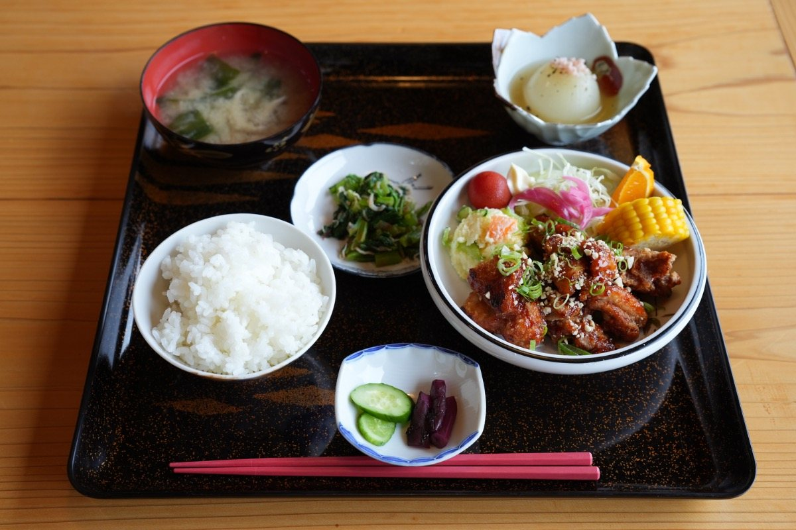
| 営業時間 | 10:30〜15:00（日替わり定食は11:30〜13:30 L.O.、軽食は11:30〜14:30 L.O.） |
|---|---|
| 定休日 | 月曜・火曜 |
| 住所 | 徳島県勝浦郡上勝町福原字下日浦76-12 |
| 予約 | 不要（電話で問い合わせ可） — ☎ 0885-46-0198 |
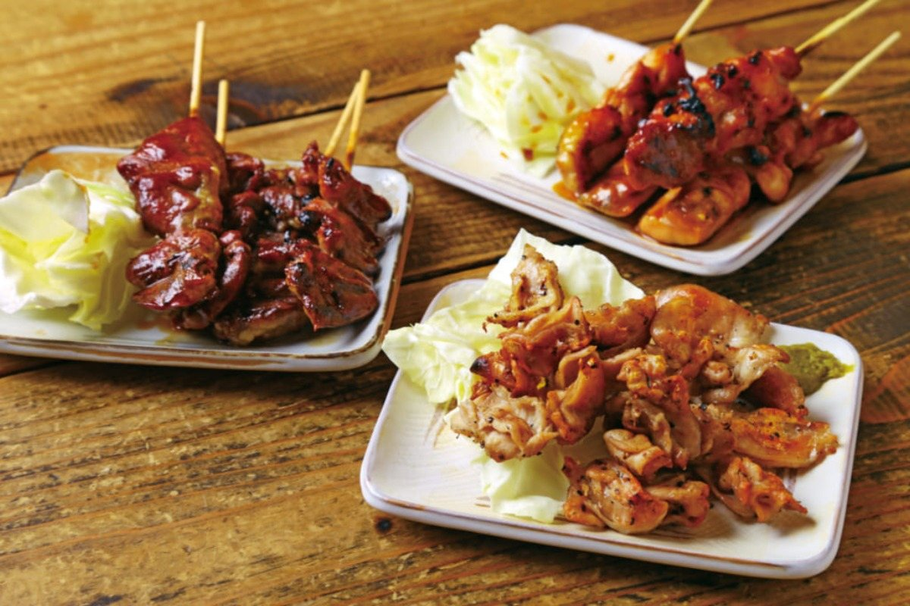
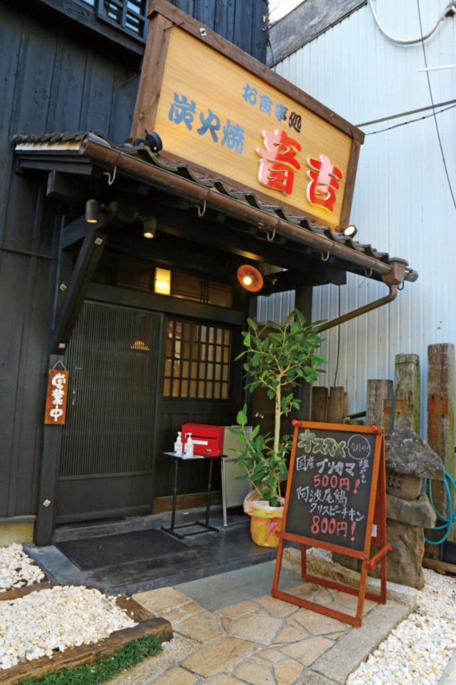
| 営業時間 | 11:00〜14:00（L.O.13:30）／17:00〜23:00（フードL.O.22:00・ドリンクL.O.22:30）※阿波ナビの掲載は「11:00〜22:00」 |
|---|---|
| 定休日 | 不定休（阿波ナビの掲載は「無休」） |
| 住所 | 徳島県阿南市富岡町今福寺46-4 |
| 予約 | 未確認（電話 0884-24-3163。半個室・個室あり） — ☎ 0884-24-3163 |
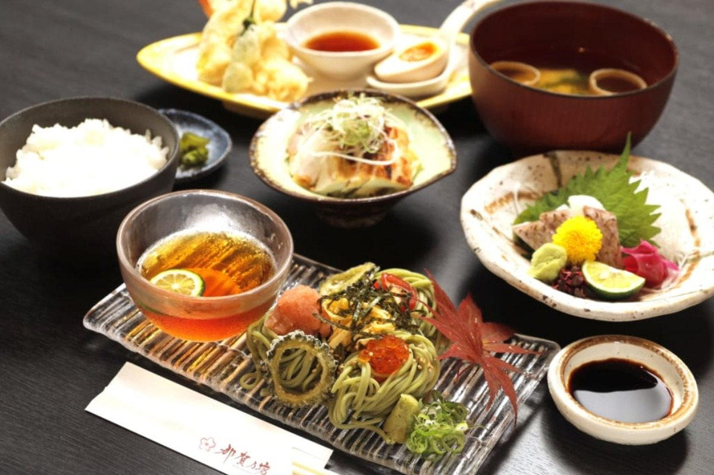
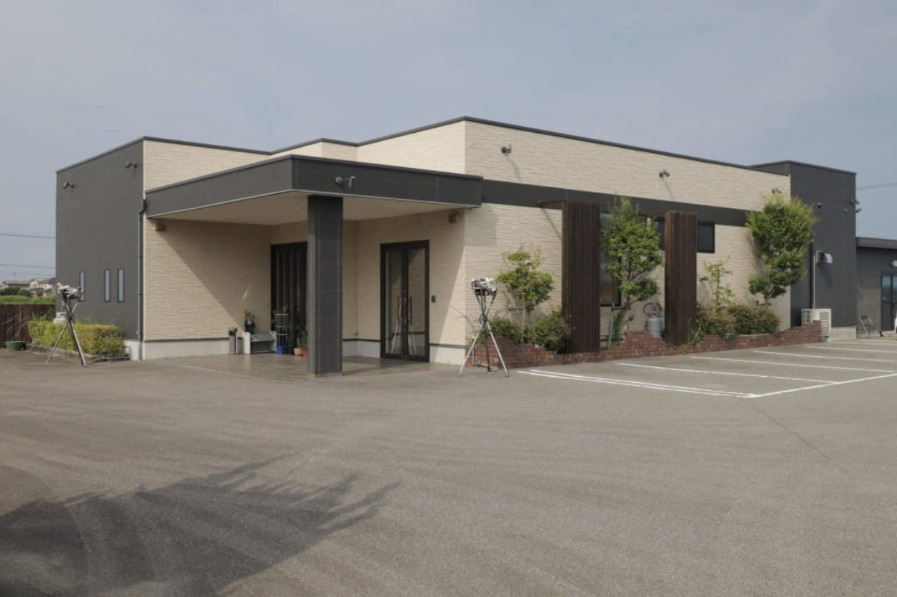
| 営業時間 | 11:00〜L.O.14:00／17:00〜L.O.20:30 |
|---|---|
| 定休日 | 第1・第3・第5火曜／毎週水曜 |
| 住所 | 徳島県阿南市羽ノ浦町中庄大久保102（阿波ナビは移転前の「中庄大久保33-3」を掲載したまま） |
| 予約 | 可（電話。宴会は会席3,500円〜で最大40名まで。法要・祝い事の弁当も受ける） — ☎ 0884-44-6133 |
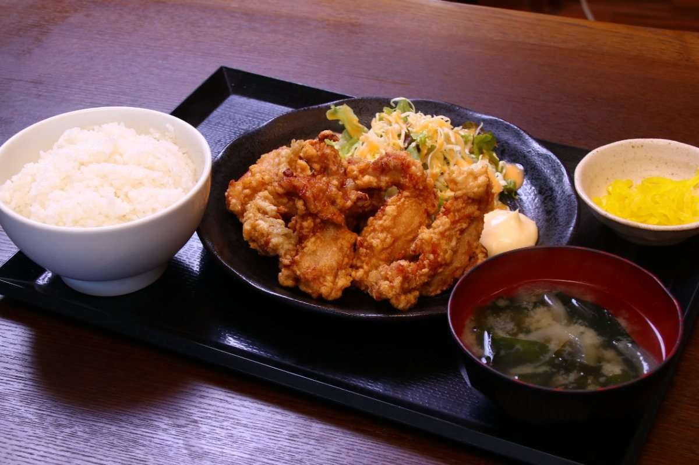
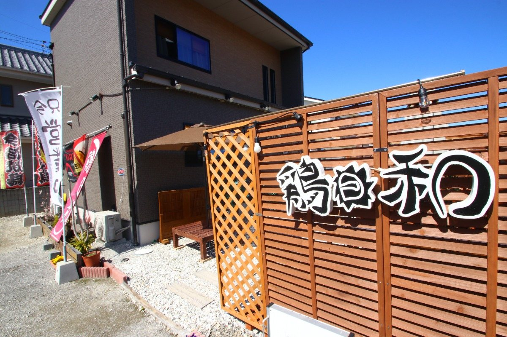
| 営業時間 | 11:00〜14:00（L.O.13:30）／16:00〜21:00（L.O.20:30） |
|---|---|
| 定休日 | 不定休 |
| 住所 | 徳島県阿南市羽ノ浦町中庄なかれ32-6 |
| 予約 | 可（電話。ただし15席で昼は満席になりやすい） — ☎ 0884-38-0720 |
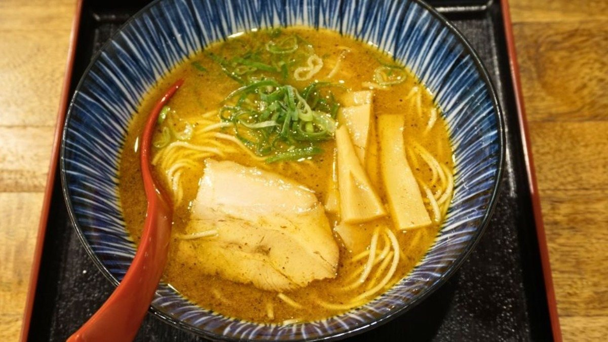
| 営業時間 | 金・土 20:00〜22:30（夜ラー）。ほかに水曜 18:30〜20:00 の「平日夜ラー」が不定期に入る（公式Instagram @matsurika_room の営業カレンダーで告知） |
|---|---|
| 定休日 | 月・火・木・日（水曜は不定期営業） |
| 住所 | 徳島県阿南市富岡町あ石3-12 ふれあい1F 103 |
| 予約 | 未確認（席数が少ないため来店前に公式Instagramの営業カレンダーで営業日を確かめるのが確実） — ☎ 090-9556-6961 |
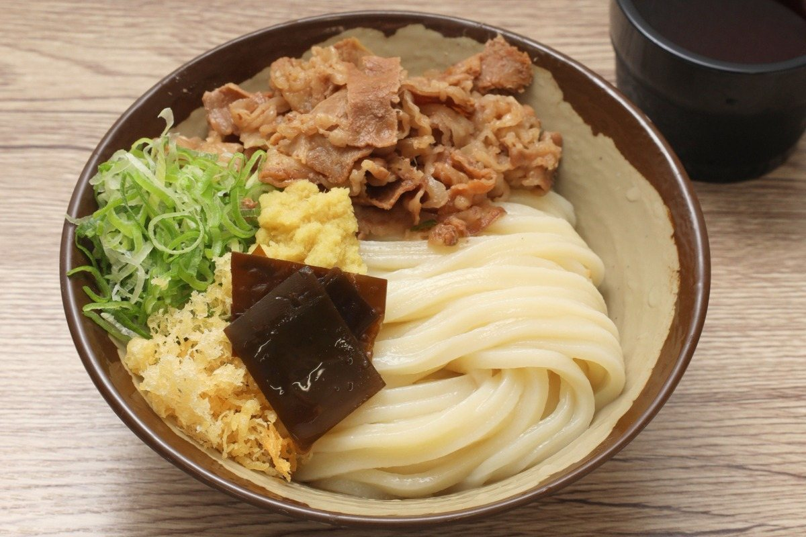
| 営業時間 | 11:00〜14:00 |
|---|---|
| 定休日 | 月曜（2026年11月は2日・9日・16日・30日の月曜と24日〈火・振替〉が休み、23日〈月・祝〉は営業＝公式Instagramの告知） |
| 住所 | 徳島県小松島市横須町8-52 ハッピープラザ |
| 予約 | セルフ形式のため席の予約は想定されていない（予約の可否は未確認） — ☎ 050-1245-0398 ／ 公式サイト |
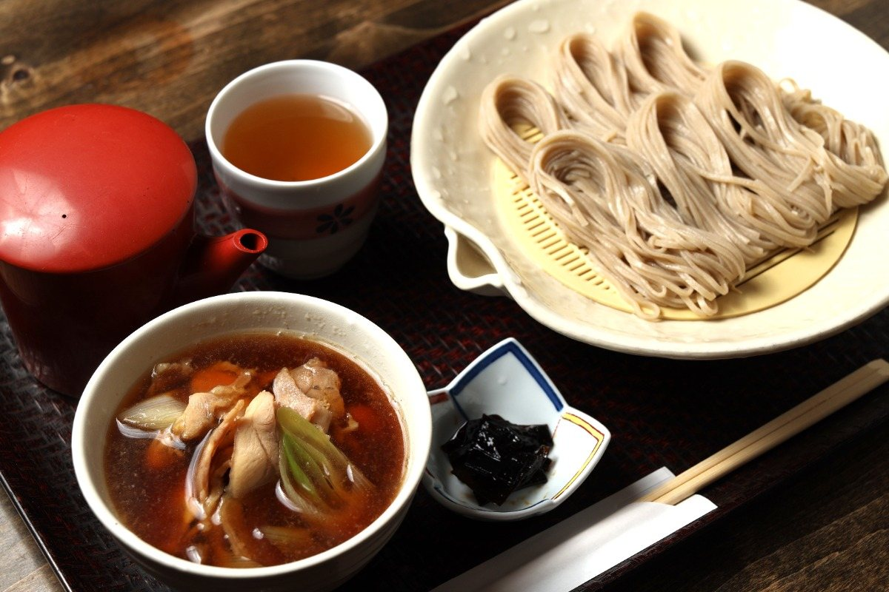
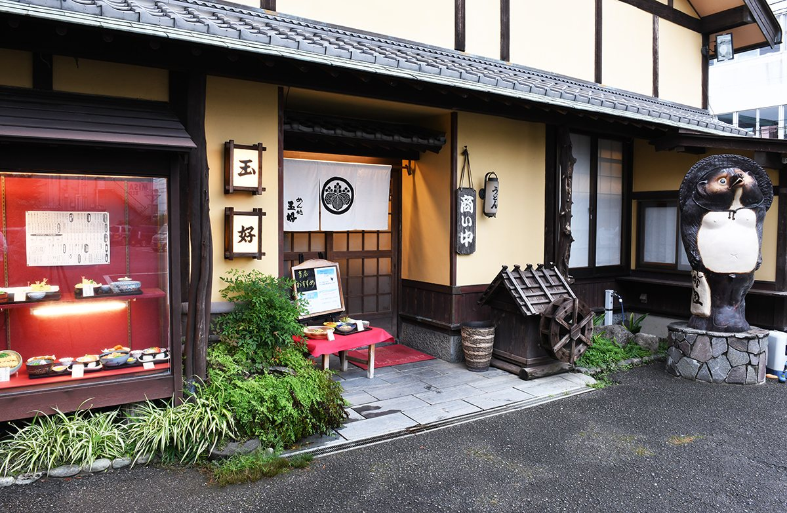
| 営業時間 | 月〜金 11:00〜ラストオーダー18:00（閉店18:30）／土・日・祝日・ゴールデンウィーク・お盆・年末年始 11:00〜ラストオーダー19:00（閉店19:30） |
|---|---|
| 定休日 | 毎週木曜（定休日が祝日と重なる場合は変更あり。2026年11月は5日・12日・19日・26日が休み） |
| 住所 | 徳島県小松島市中田町内開10-7（〒773-0015） |
| 予約 | 可（電話 0885-32-7016。2階に42席の宴会場があり団体の予約を受けている） — ☎ 0885-32-7016 ／ 公式サイト |
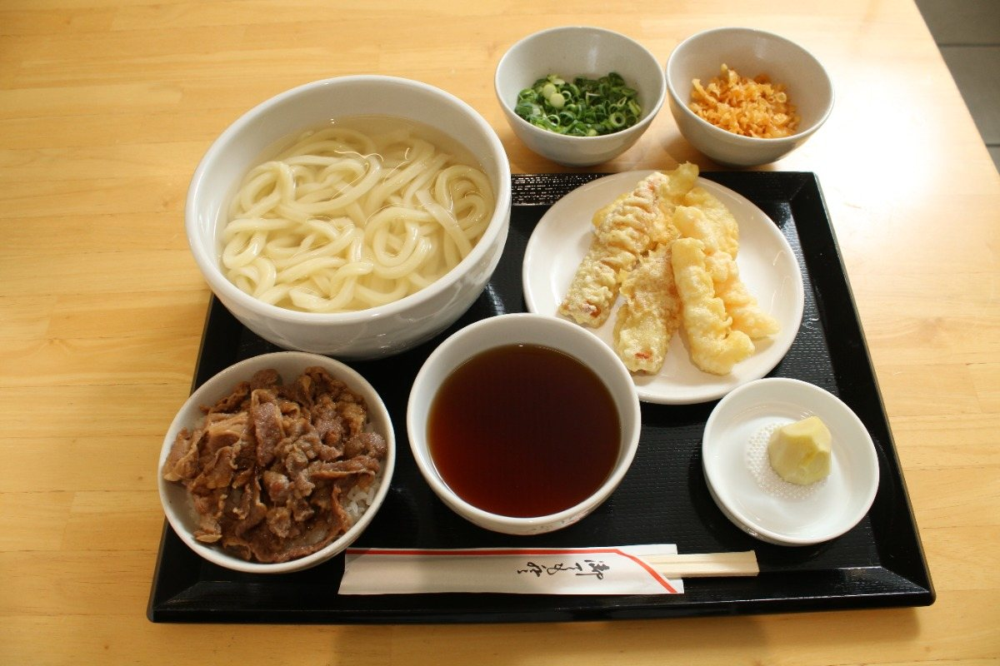
| 営業時間 | 11:00〜14:00（ラストオーダー） ※道の駅わじきの営業は9:00〜17:00 |
|---|---|
| 定休日 | 木曜 |
| 住所 | 徳島県那賀郡那賀町中山関が原34-56（道の駅わじき内） |
| 予約 | 未確認（たらいうどん「関ヶ原」は大人数向けのため、人数が多いときは電話で相談するのが無難） — ☎ 0884-62-3553 ／ 公式サイト |
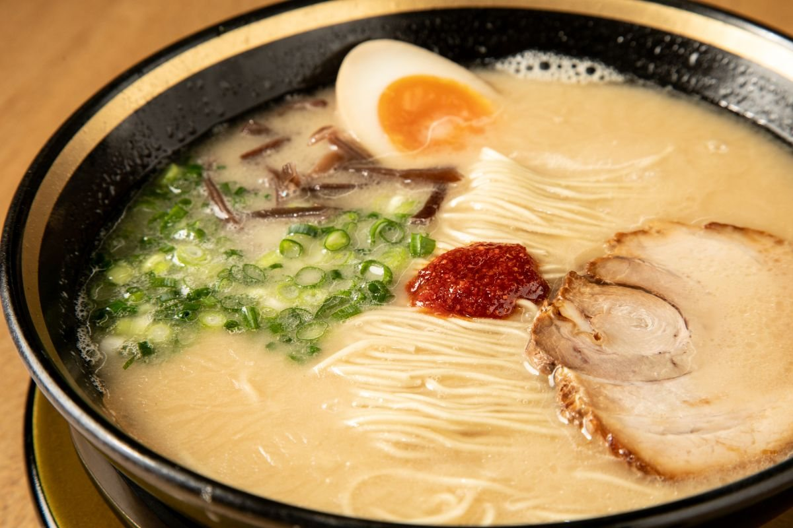
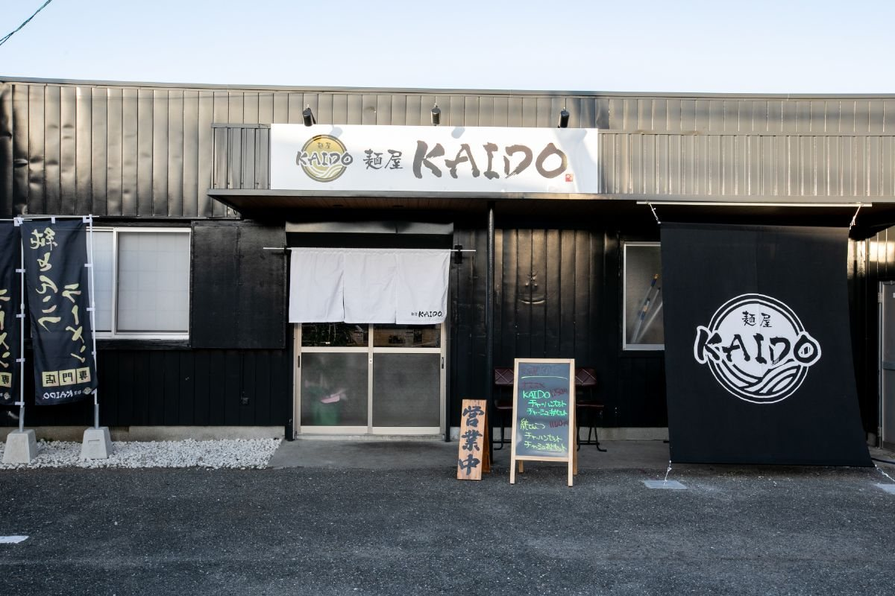
| 営業時間 | 月・水〜日 11:00〜15:00／17:00〜20:00（売り切れ次第終了） ※あわわの店舗ページは「11:00〜17:00」と記載しており食い違う。公式サイトの記載を採った |
|---|---|
| 定休日 | 毎週火曜日 |
| 住所 | 徳島県阿南市宝田町川原15-1 |
| 予約 | 席の予約可否は未確認。テイクアウトの注文・問い合わせは電話（0884-22-8890）で受け付けている — ☎ 0884-22-8890 ／ 公式サイト |
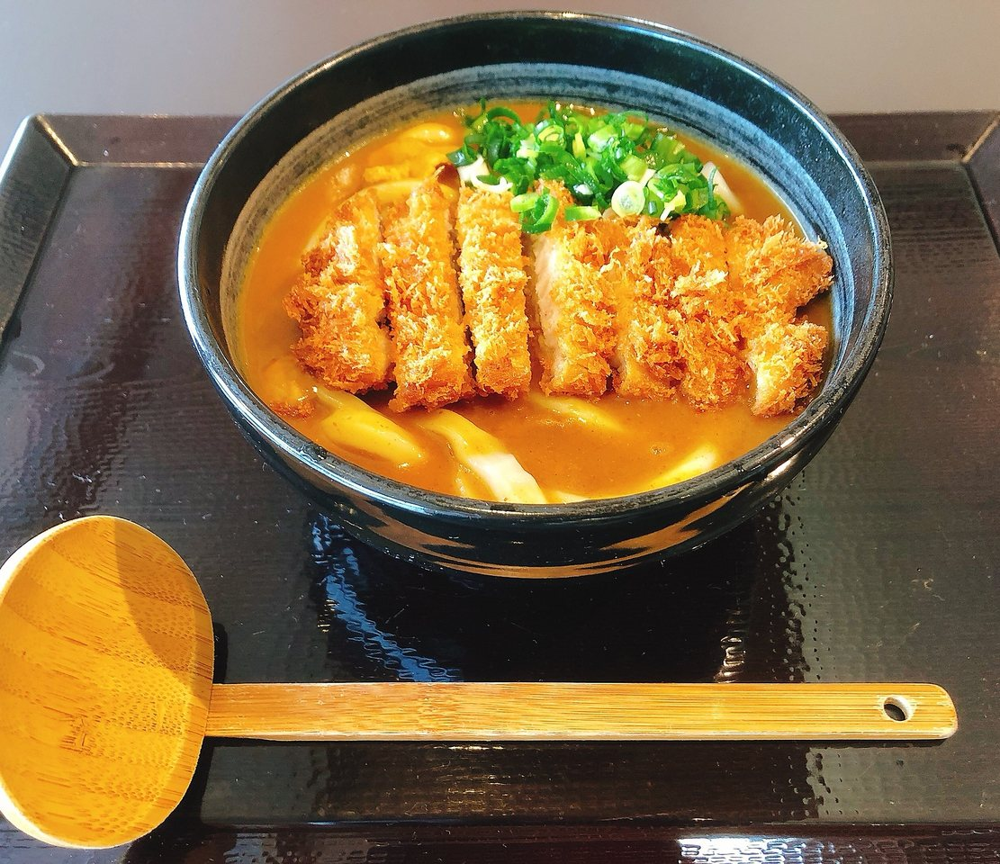
| 営業時間 | 月・火・木・金 11:00〜14:00（L.O. 14:00）／土・日 11:00〜14:30（L.O. 14:30）、17:00〜20:00（料理L.O. 19:50） |
|---|---|
| 定休日 | 水曜 |
| 住所 | 徳島県阿南市橘町青木55-1（旧表記 8-1） |
| 予約 | 可（ホットペッパーグルメのネット予約。即予約は来店日の当日14時まで受付。曜日・コースにより締切が異なる） — ☎ 0884-28-1227 |
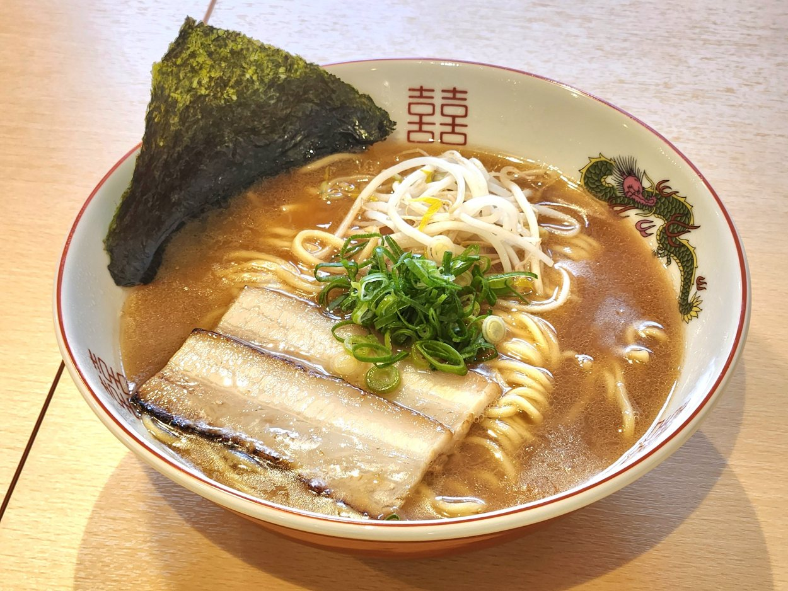
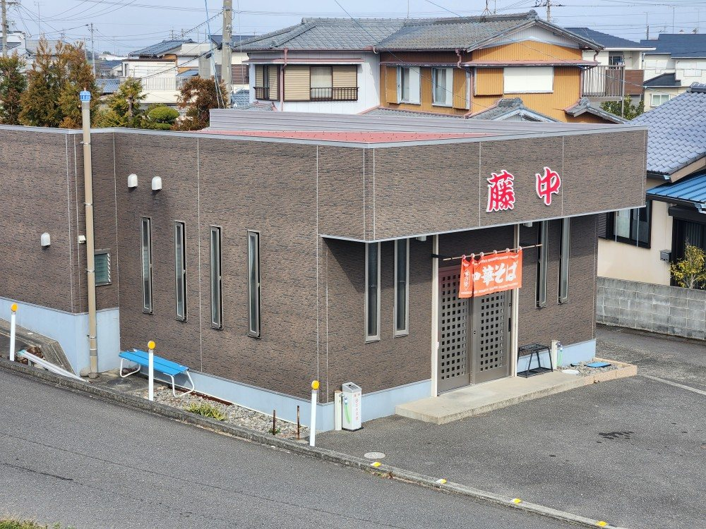
| 営業時間 | 11:00〜15:00（売り切れ次第終了） |
|---|---|
| 定休日 | 日曜日 |
| 住所 | 徳島県阿南市那賀川町赤池375-3 |
| 予約 | 未確認（公式サイトに予約の案内が無い） — ☎ 0884-42-0429 ／ 公式サイト |
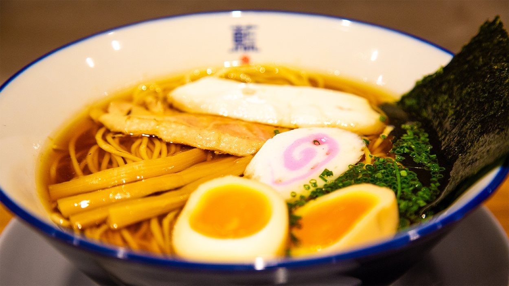
| 営業時間 | 平日 11:00〜15:00／土・日・祝 11:00〜16:00（スープが無くなり次第 閉店） ※当面のあいだ夜の営業は休止。お盆・年末年始は別 |
|---|---|
| 定休日 | 月曜日（月曜が祝日の場合は翌火曜に振替） |
| 住所 | 徳島県海部郡美波町奥河内字寺前229-1 |
| 予約 | 未確認（公式サイトに予約の案内が無い） — ☎ 0884-70-1590 ／ 公式サイト |
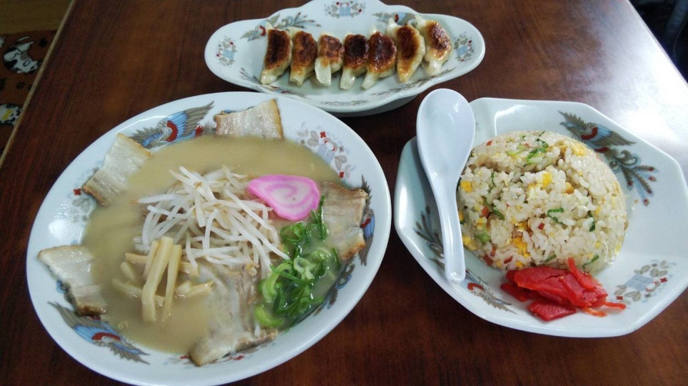
| 営業時間 | 11:00〜18:00（なんとPlus） ※Yahoo!マップは「営業開始 10:30」と記載しており食い違う。訪問前に電話で確認のこと。持ち帰りの受取は10:00〜18:00（前日までの予約が必要） |
|---|---|
| 定休日 | 月曜日・火曜日（祝日の場合は営業し、翌日が休み） |
| 住所 | 徳島県阿南市桑野町大地115-2 |
| 予約 | 持ち帰りは電話で予約可（受付 11:00〜17:00。前日18:00までの予約で開店前10:00から受取可）。席の予約可否は未確認 — ☎ 0884-26-1567 |
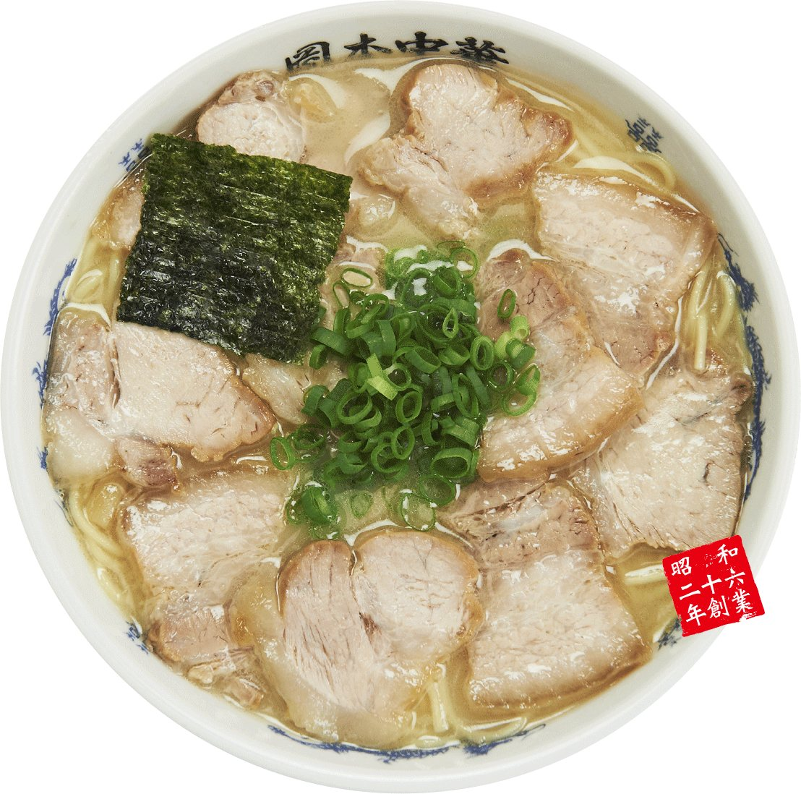
| 営業時間 | 11:00〜18:00（売り切れ次第終了） ※阿波ナビは「11:00〜18:00LO（売切次第終了）※変更の場合あり」と記載 |
|---|---|
| 定休日 | 毎週木曜日、第2・第4水曜日 |
| 住所 | 徳島県小松島市中田町奥林60-1 |
| 予約 | 未確認（公式サイトに席の予約の案内が無い。通信販売はオンラインショップで受付） — ☎ 0885-32-0653 ／ 公式サイト |
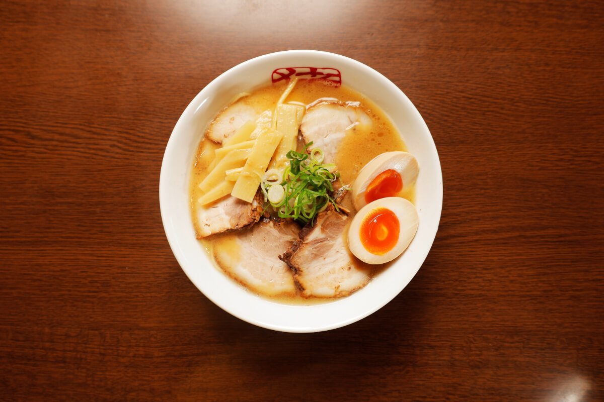
| 営業時間 | 11:00〜20:00（売り切れ次第終了） ※土・日曜・祝日は〜15:00（阿波ナビの記載）。公式サイトとイーストとくしまは曜日を分けず11:00〜20:00と記載しており食い違う |
|---|---|
| 定休日 | 不定休（休業日は公式サイトとInstagramで案内） |
| 住所 | 徳島県小松島市横須町8-52（ハッピープラザ内） |
| 予約 | 予約・問い合わせは電話で受付（公式サイトの案内。受付は営業時間の11:00〜20:00） — ☎ 0885-33-0839 ／ 公式サイト |
| 営業時間 | 月・火・祝日 18:00〜翌0:00／水〜日 18:30〜翌0:00（料理ラストオーダー23:00、ドリンクラストオーダー23:30） ※公式Instagramのプロフィールは「18:00〜24:00（ラスト23:00）」としており食い違う |
|---|---|
| 定休日 | ホットペッパーグルメには定休日の記載が無く、「祝日があった場合は代休を都度決めている」と案内している。公式Instagramのプロフィールは「定休日：月曜」。来店前に電話で確かめるのが確実 |
| 住所 | 徳島県阿南市羽ノ浦町宮倉太田6-1 ストウテナント102 |
| 予約 | 可（ホットペッパーグルメのネット予約。即予約は来店日の当日21時まで、リクエスト予約は前日17時まで。電話は070-8474-6168） — ☎ 070-8474-6168 |
| 営業時間 | 18:00〜22:00（ラストオーダー21:30）＝公式Instagram／Threadsのプロフィール ※あわわの掲載は「17:00〜22:00」と食い違う |
|---|---|
| 定休日 | 日曜・水曜（予約状況により変動）＝公式Instagram／Threadsのプロフィール ※あわわの掲載は「無休」と食い違う |
| 住所 | 徳島県小松島市小松島町字網渕1-9（〒773-0001） |
| 予約 | 可（電話 0885-39-1283、公式InstagramのDMでも受け付け。2階に貸切できる個室が4部屋ある） — ☎ 0885-39-1283 |
| 営業時間 | 11:00〜14:00／18:00〜23:00（水・土・日曜と祝日は18:00〜23:00のみ） |
|---|---|
| 定休日 | 水曜 |
| 住所 | 徳島県阿南市津乃峰町長浜110-6 |
| 予約 | 未確認（あわわの記事・楽天ぐるなびの店舗ページとも予約の可否を書いていない。電話は上記） — ☎ 0884-49-5501 |
| 営業時間 | 月〜日・祝日・祝前日 17:00〜翌0:00（客がいる場合は夜中も営業） |
|---|---|
| 定休日 | なし（年中無休） |
| 住所 | 徳島県阿南市羽ノ浦町宮倉日開元17-1 井上ビル1階 |
| 予約 | 可（ホットペッパーグルメのネット予約で即予約可。来店当日20時まで受付。電話も可） — ☎ 090-4504-3071 |
| 営業時間 | 月〜土・祝前日 17:00〜翌0:00（料理L.O. 23:15／ドリンクL.O. 23:30） |
|---|---|
| 定休日 | 日曜・祝日（ゴールデンウィーク等の大型連休の祝日は予約に応じる） |
| 住所 | 徳島県阿南市富岡町南向23-4 松下ビル1F |
| 予約 | 可（ホットペッパーグルメのネット予約はリクエスト予約。電話も可） — ☎ 090-4784-3769 |
| 営業時間 | 12:00〜24:00（時間外は応相談）。ただし徳島県のジビエ料理店一覧では「不定（電話で事前に要確認）」とされ、あわわの記事にも「営業時間内でも漁に出ている場合あり」と注記がある |
|---|---|
| 定休日 | 不定休 |
| 住所 | 徳島県阿南市中林町横手2 |
| 予約 | 未確認（あわわの記事・徳島県のジビエ料理店一覧とも予約の可否を書いていない。漁で不在のことがあるため、行く前に上記へ電話するのが確実） — ☎ 080-5312-6533 |
| 営業時間 | 月・火・日 17:30〜21:00（料理L.O. 20:30／ドリンクL.O. 20:30）／木 17:30〜21:00／金・土 17:30〜22:00（料理L.O. 21:30／ドリンクL.O. 21:30） |
|---|---|
| 定休日 | 水曜 |
| 住所 | 徳島県小松島市南小松島町13-17 |
| 予約 | 可（ホットペッパーグルメのネット予約で即予約可。公式ページからも予約できる。電話も可） — ☎ 0885-38-6288 ／ 公式サイト |
| 営業時間 | 11:00〜20:30（L.O. 20:00） |
|---|---|
| 定休日 | 火曜（祝日の場合は営業、翌日休） |
| 住所 | 徳島県阿南市橘町北新田1-2 |
| 予約 | 可（電話 0884-27-3377）。席の予約は電話で受け付ける — ☎ 0884-27-3377 ／ 公式サイト |
| 営業時間 | 【ランチ】11:00〜14:30（L.O. 14:00） 【ディナー】18:00〜21:00（L.O. 20:30） ※ランチは予約不可。混雑時は受付を早く終えることがある |
|---|---|
| 定休日 | 火曜 |
| 住所 | 徳島県阿南市那賀川町工地759-1 |
| 予約 | ディナーのみ可（電話 0884-49-5529、またはホットペッパーグルメのネット予約）。ランチは予約不可。10〜20人の個室利用はディナータイムのみで、予約時に要相談 — ☎ 0884-49-5529 ／ 公式サイト |
| 営業時間 | 月・火・水・金・土: 11:00〜14:30（料理L.O. 14:00／ドリンクL.O. 14:00）／17:30〜20:30（料理L.O. 20:00／ドリンクL.O. 20:00） |
|---|---|
| 定休日 | 木曜・日曜 |
| 住所 | 徳島県阿南市羽ノ浦町宮倉芝生79-1 パル羽ノ浦イートモール |
| 予約 | 可（ホットペッパーグルメのネット予約。個室は6〜8名で人気のため早めの予約が要る。誕生日・記念日のメッセージプレートは前日までの予約制）。電話番号はホットペッパーグルメの「電話番号を表示する」から確認のこと（当方では番号を取得できず未確認） — 公式サイト |
| 営業時間 | 11:00〜14:00（L.O. 14:00）／17:00〜22:00（L.O. 21:00） ※昼の週替わりランチは1日20食限定、スープが売り切れ次第終了。ホットペッパーグルメの表示は夜21:00まで |
|---|---|
| 定休日 | 水曜（臨時休業あり）および第1・第3月曜（祝日の場合は翌日） |
| 住所 | 徳島県阿南市羽ノ浦町宮倉芝生1-3 |
| 予約 | 可（電話 0884-44-1306）。テイクアウトも電話予約可。特製オードブル（5〜6人前8,000円）は要予約。個室2部屋をつなげて最大25名の宴会に対応 — ☎ 0884-44-1306 ／ 公式サイト |
| 営業時間 | 11:00〜15:00（L.O. 14:30）／17:30〜21:00（L.O. 20:30） |
|---|---|
| 定休日 | 水曜 |
| 住所 | 徳島県阿南市羽ノ浦町宮倉芝生7-7 |
| 予約 | 未確認（あわわの店舗情報に予約の可否の記載がない。問い合わせは電話 0884-44-1535）。支払いは現金のみ — ☎ 0884-44-1535 |
| 営業時間 | 12:00〜14:30（売り切れ次第終了）／17:00〜19:00（予約のみ。営業日はInstagram @maruka61 のストーリーズで告知） |
|---|---|
| 定休日 | 日曜・月曜・祝日 |
| 住所 | 徳島県小松島市小松島町新港29-4 |
| 予約 | 可（電話 090-7575-3725）。夕方（17:00〜19:00）は予約のみ。昼も事前予約をしておくと待ち時間が短い — ☎ 090-7575-3725 |
| 営業時間 | 11:30〜14:00／17:00〜22:00（L.O. 21:30） |
|---|---|
| 定休日 | 火曜（ほかに不定休あり。臨時休業もあるので遠方からは事前に電話で確認のこと） |
| 住所 | 徳島県海部郡美波町奥河内字寺前490-4 |
| 予約 | 可（電話 0884-70-1464）。夜の焼肉は予約しておくと確実。支払いは現金のみ — ☎ 0884-70-1464 |
| 営業時間 | 11:00〜15:00（14:30ラストオーダー）／18:00〜21:00（20:00ラストオーダー）※日曜は11:00〜16:00 |
|---|---|
| 定休日 | 火曜 |
| 住所 | 徳島県阿南市富岡町今福寺49-10 ミラビル1F |
| 予約 | 貸切・大人数での利用に対応（電話で相談。通常の席の予約可否は未確認） — ☎ 080-3169-2845 ／ 公式サイト |
| 営業時間 | 11:30〜16:00（ランチのラストオーダー14:00／カフェのラストオーダー15:00） |
|---|---|
| 定休日 | 月曜・木曜・金曜（祝日の場合は営業し、翌日休み） |
| 住所 | 徳島県阿南市吉井町皇神7-3 |
| 予約 | 可（電話 090-2820-8050 またはメール cafe.boscobel@gmail.com。公式サイトに「ご予約」として記載） — ☎ 090-2820-8050 ／ 公式サイト |
| 営業時間 | 10:00〜17:00（店の公式SNS 2026年10月19日の記載） |
|---|---|
| 定休日 | 月曜（店の公式SNS 2026年10月19日の記載） |
| 住所 | 徳島県小松島市大林町立光地147 |
| 予約 | 不要（コーヒースタンドのため席の予約は受けていない。豆の通信販売は公式サイトで受付） — ☎ 0885-39-1275 ／ 公式サイト |
| 営業時間 | 7:00〜17:00（タウン誌「あわわ」取材記事）。2026年10月の来店記録では9:00〜17:00とされており、朝の開店時刻は変わっている可能性がある。訪問前に電話で確認を |
|---|---|
| 定休日 | 月曜（取材記事では第2・第4火曜と不定休もあり） |
| 住所 | 徳島県阿南市羽ノ浦町宮倉沢田64 |
| 予約 | 不可（席の予約は受けていない） — ☎ 0884-21-8820 |
| 営業時間 | 7:00〜18:00 |
|---|---|
| 定休日 | 月曜 |
| 住所 | 徳島県阿南市橘町幸野36-1 |
| 予約 | 不要（パンの販売のみ。取り置き・予約の可否は未確認） — ☎ 0884-28-0552 ／ 公式サイト |
| 営業時間 | 11:00〜16:00（土・日曜、祝日は10:00〜16:00）。美波町観光協会の案内は10:00〜16:00 |
|---|---|
| 定休日 | 水曜・木曜（祝日・繁忙期は営業） |
| 住所 | 徳島県海部郡美波町奥河内477-1（道の駅日和佐） |
| 予約 | 不要（テイクアウトのみの販売） |
| 営業時間 | 平日 10:30〜19:00（18:30ラストオーダー）／土・日曜、祝日 10:30〜19:30（19:00ラストオーダー）※食事メニューは11:00〜 |
|---|---|
| 定休日 | 水曜 |
| 住所 | 徳島県阿南市新野町是国56 |
| 予約 | 未確認（取材記事・公式サイトのいずれにも予約の可否の記載が無い） — ☎ 0884-36-2288 ／ 公式サイト |
| 営業時間 | 10:00〜 売り切れ次第終了（公式サイト。検索事業者の店舗情報では10:00〜17:00）。火曜は焼き菓子のみの販売で16時まで |
|---|---|
| 定休日 | 日曜・月曜（火曜は焼き菓子のみの販売で、生ケーキの販売は無し） |
| 住所 | 徳島県阿南市那賀川町工地641 |
| 予約 | 未確認（公式サイトに予約の可否の記載が無い。ホールケーキの注文は電話で相談） — ☎ 0884-42-4442 ／ 公式サイト |
本ガイドは個人利用目的で作成。掲載情報は2026年10月時点の調査に基づく。写真出典: 各店の公式サイト・公式SNS、および地域情報サイト等の掲載写真（著作権は各サイト・各撮影者に帰属）。引用元は店ごとにカード内へ明記。